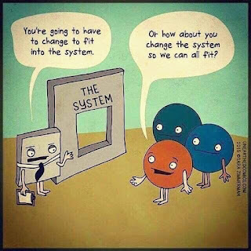

Individuals, not checklists
A diagnosis is a starting point. Getting to know the student is the first step.

When a teacher hears that a student has a diagnosis - whether it be dyslexia, ADHD or Autism - out comes the mental or written checklist of strategies. Assistive technology, word lists, movement breaks, clear targets, sensory circuits, visual timetables..... While it is encouraging that teachers want to meet the needs of the students in their class, in my opinion this is the wrong approach.
Every student is different and equally every student with an additional need is different. While there are common traits of course, the first step should really be about getting to know the student - what are their specific strengths and weaknesses, what are their interests, what makes them tick?
One of the reasons that interventions sometimes don't work or progress is slow is that they are not well matched to the student. It could be that it is targeting an area that they are not ready for or there is too much emphasis in an area of weakness without acknowledging areas of strength.
Motivation is a key factor for any student, this is even more important when there is a challenge involved. Understanding what makes a student tick helps greatly with motivation. Students need to be involved in their learning journey and should understand why different approaches are being suggested. Students have different levels of maturity and it is true that they don't always see the bigger picture or know what might benefit them. However, even young children can understand a reason they need to do different activities if we explain it in an age appropriate way. When a student is invested in an activity because they see it will benefit them rather than just doing it because the teacher says so, their approach is different. They will be more willing to persist longer and cope with the discomfort that learning new things can bring. For example: if they have the goal of learning 10 more words so they can read a book they like, they can cope with having to practice every day. When I taught young students who struggled with phonics and I would explain that our lesson was 'brain exercise'. We talked about how when we run around in the playground and get out of breath, we might feel tired or uncomfortable. I explained that learning to read is similar and that as we exercise our brain it also might feel uncomfortable. It really helped the students to give things a go even when they were hard. As they made progress and found themselves reading words they thought they could not do their confidence and motivation grew.

Parent input is also vital for students with learning differences. Teachers see one side of a student while parents see another. It really isn't that one is right and the other.is wrong. There is difference in perspective, along with a genuine difference in the way students behave at school and at home. Most parents never actually see the way their child is at school, equally teachers rarely see students in their home setting. As a teacher in the school my son attends I have the unique opportunity to see my son in both contexts. I have seen him look 'happy' at school and conform to what the teacher asks, while at home he cries and doesn't want to school because he is not learning anything new. I have seen him be quiet and withdrawn in school while at home he talks non stop and constantly asks questions. There is a reason for these differences. Teachers have a curriculum to follow with specific goals, they have a whole class of students to manage which impacts their approach. As a teacher we can often have a narrow view of a students skills and abilities as we view things through our school goals lens. We do not see the things students do at home when they are relaxed and are involved in activities they enjoy. I have worked with a student who could barely write a sentence at school but at home made intricate, custom alterations to his bike. Parents see their child at their best and worst, they see the spark when they are doing something they enjoy and the frustration when things don't go their way. They are thinking about the child's whole life and long term goals not just what they achieve in school. If we think of ourselves as adults, we know that we would behave very differently in a meeting with our boss than we would on a night out with good friends. In my opinion too much time is spent 'arguing' about who is 'right' and who is 'wrong' rather than respecting the different view points and learning from it. The wisdom and insights a parent brings can help to shape our approach to a student and bring a deeper understanding of their strengths and weakness. This can often be the key to selecting appropriate activities that will lead to positive results. Equally when parents reinforce key messages and practice specific skills at home greater progress in school is seen. Let's take the time to get to know students and their families well so that we can confidently offer the type of support they actually need. When a child and a parent feel understood and 'seen' positive outcomes follow.
First published on Helen's blog on 18 October 2025. Read it on the blog.